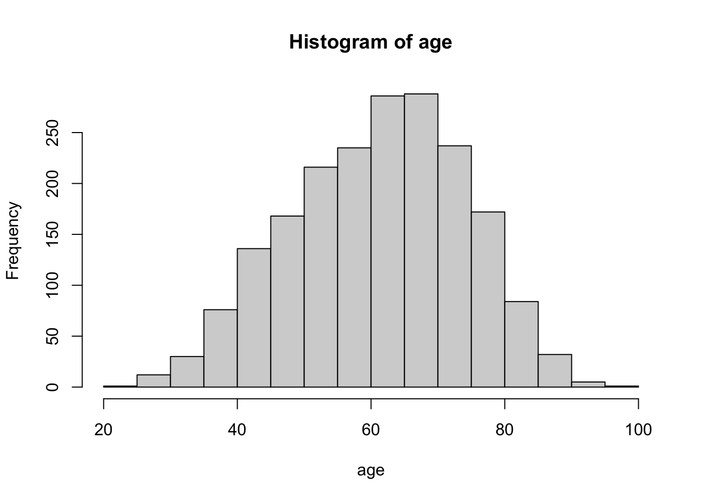
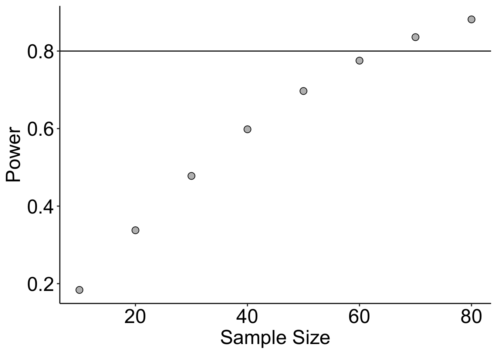
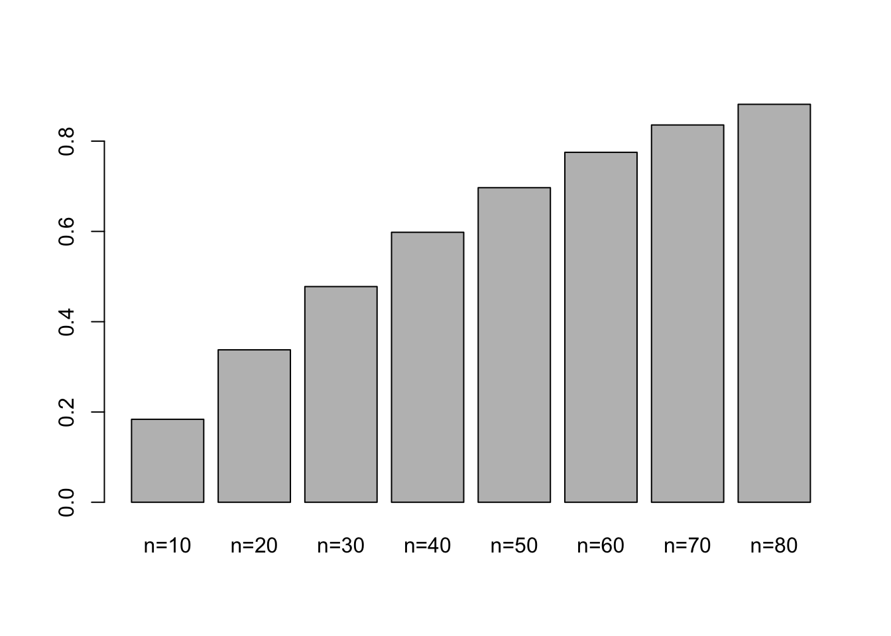
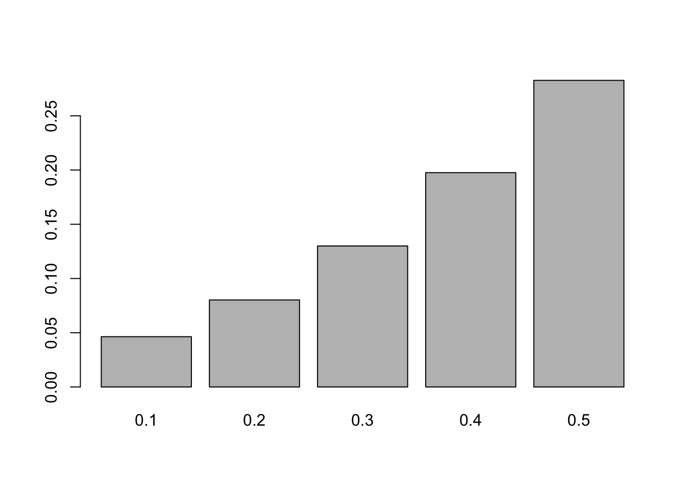

library(ggplot2)
library(ggpubr)Section 03
Exercise 1
u='https://raw.githubusercontent.com/DavidQuigley/biostatistics/master/data/metabric.txt'
curtis=read.table(u,header=TRUE,stringsAsFactors=FALSE)
age=curtis$age
subtype=curtis$ermean(age)[1] 61.09866sd(age)[1] 12.94335hist(age)
mean(age) + qnorm(0.975) * sd(age)[1] 86.46717mean(age) - qnorm(0.975) * sd(age)[1] 35.73015lower_bound = mean(age) - qnorm(0.975) * sd(age)
upper_bound = mean(age) + qnorm(0.975) * sd(age)
sum(age>lower_bound&age<upper_bound)/length(age)[1] 0.9646286sum(age >= 87)/length(age)[1] 0.007579586Exercise 2
set.seed(42)
experiment_1_group_1=rnorm(500,8,1)
experiment_1_group_2=rnorm(500,8.2,1)
experiment_2_group_1=c(21.95,11.14,13.82,10.26,2.02,4.42,8.99,-9.57,2.91,12.79)
experiment_2_group_2=c(161.20,163.13,313.04,129.23,281.74,15.10,40.42,-17.63,210.9,173.20)
t.test(experiment_1_group_1,experiment_1_group_2)
Welch Two Sample t-test
data: experiment_1_group_1 and experiment_1_group_2
t = -3.2859, df = 994.36, p-value = 0.001052
alternative hypothesis: true difference in means is not equal to 0
95 percent confidence interval:
-0.33292779 -0.08395939
sample estimates:
mean of x mean of y
7.969954 8.178397 t.test(experiment_2_group_1,experiment_2_group_2)
Welch Two Sample t-test
data: experiment_2_group_1 and experiment_2_group_2
t = -4.0213, df = 9.1093, p-value = 0.002939
alternative hypothesis: true difference in means is not equal to 0
95 percent confidence interval:
-217.30127 -61.01873
sample estimates:
mean of x mean of y
7.873 147.033 Exercise 3
power.t.test(n = 10, delta = 1, sd = 2, sig.level = 0.05)
Two-sample t test power calculation
n = 10
delta = 1
sd = 2
sig.level = 0.05
power = 0.1838375
alternative = two.sided
NOTE: n is number in *each* grouppw_list = vector()
for(n in seq(10, 80, 10)){
pw = power.t.test(n = n, delta = 1, sd = 2, sig.level = 0.05)$power
pw_list = c(pw_list, pw)
}
pw = data.frame(
pw = pw_list,
n = seq(10, 80, 10)
)
ggplot(data = pw, aes(x = n, y = pw)) +
geom_point(size = 3, color = "black", fill = "gray", shape = 21) +
geom_hline(aes(yintercept = 0.8)) +
theme_pubr() +
xlab("Sample Size") +
ylab("Power") +
theme(text = element_text(size = 20))
barplot(pw_list, names.arg = paste0("n=", seq(10,80, 10)))
preliminary_data=c(14.1,18.0,2.9,8.7,8.5,11.6,4.2,20.6,10.3,16.8)
mean(preliminary_data)[1] 11.57sd(preliminary_data)[1] 5.825242percent_increase = seq(0.1, 0.5, 0.1)
pw_list = vector()
for(pi in percent_increase){
pw = power.t.test(n = 5,
delta = mean(preliminary_data)*pi,
sd = sd(preliminary_data),
sig.level = 0.05)$power
pw_list = c(pw_list, pw)
}
pw_list[1] 0.04635622 0.08024868 0.13000097 0.19760273 0.28268529barplot(pw_list, names.arg = percent_increase)